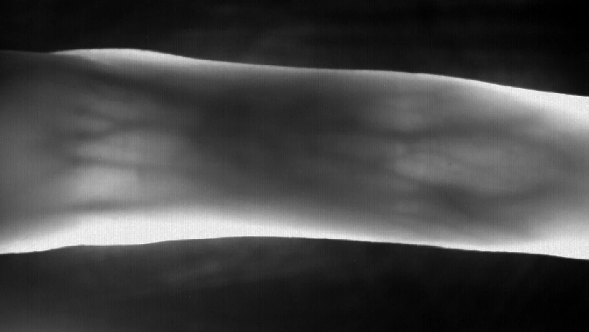
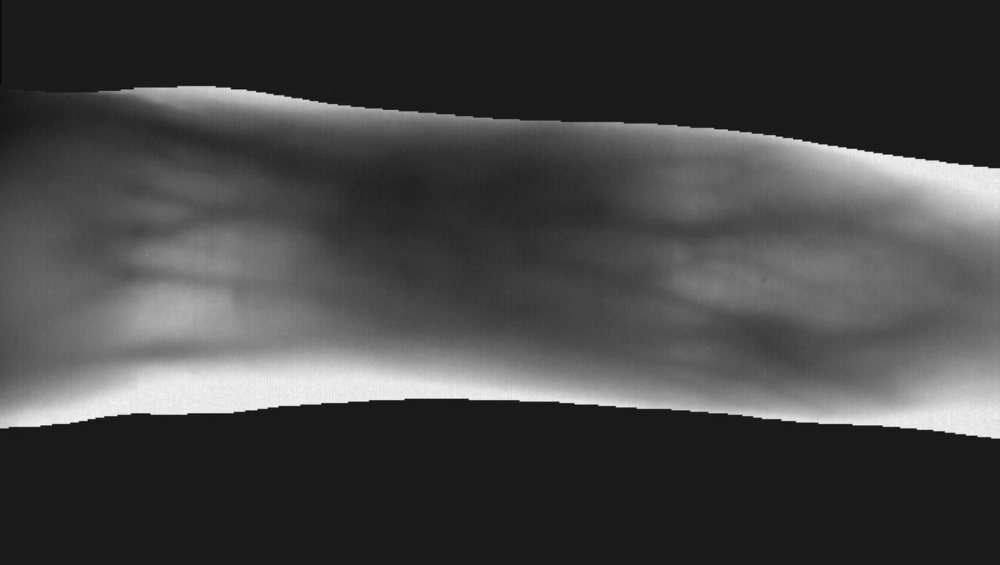
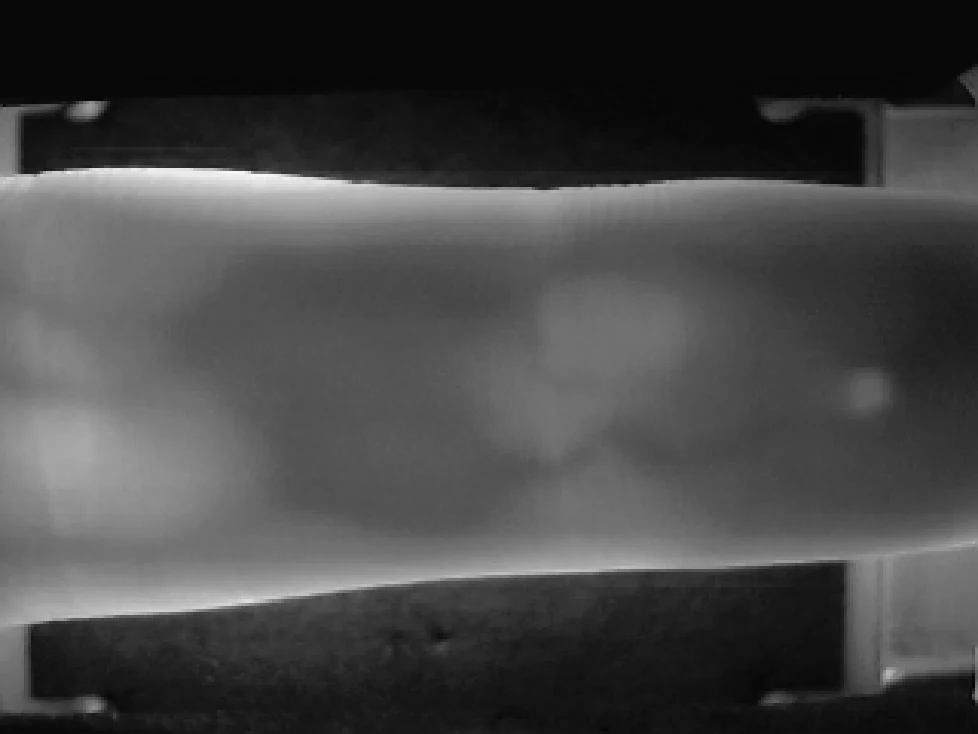
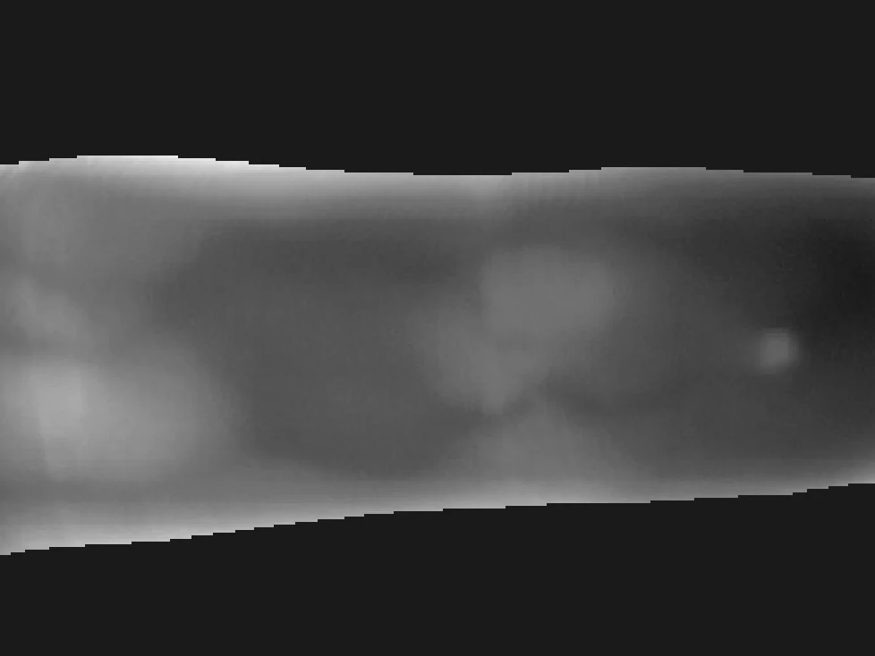
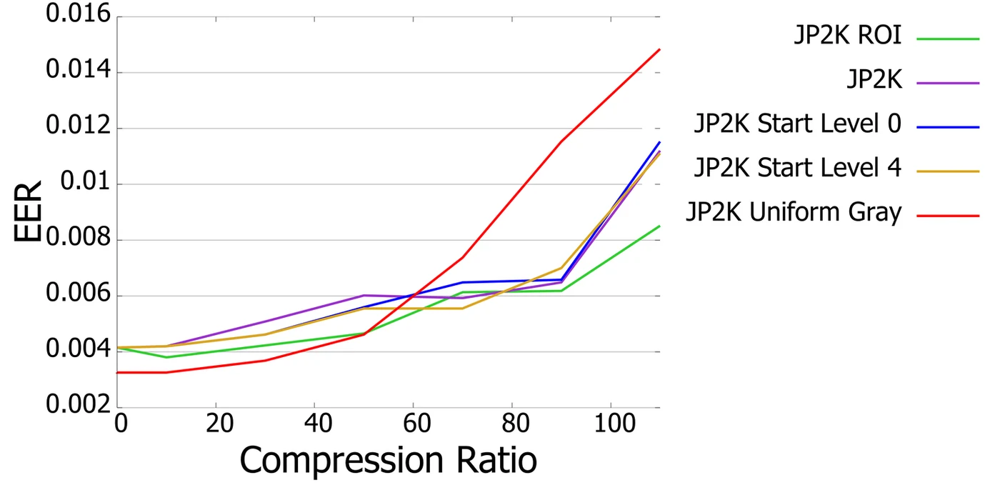
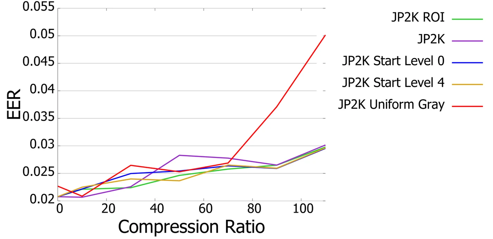
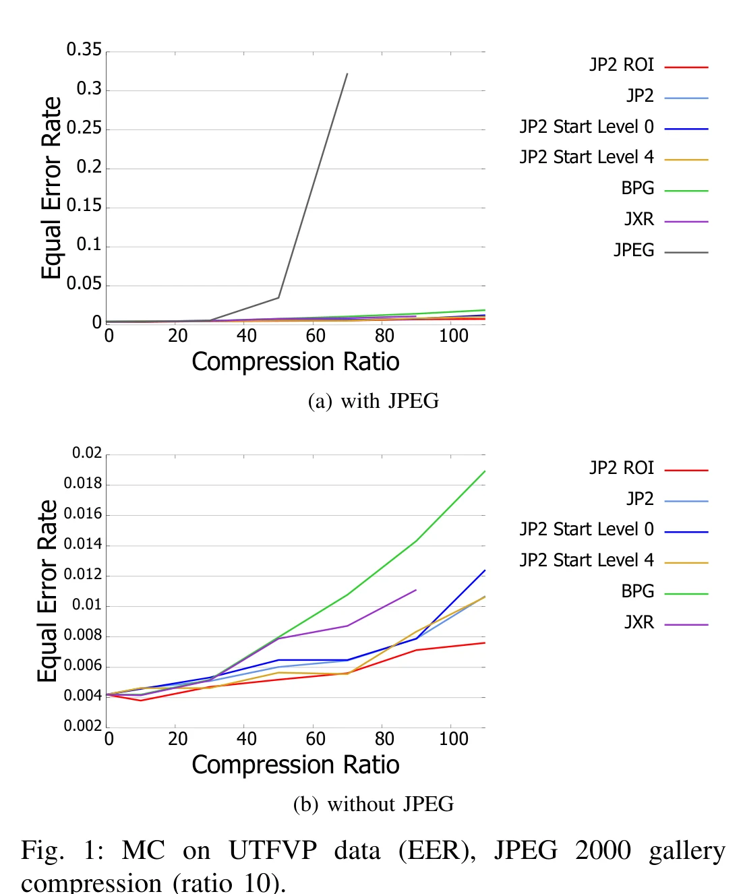
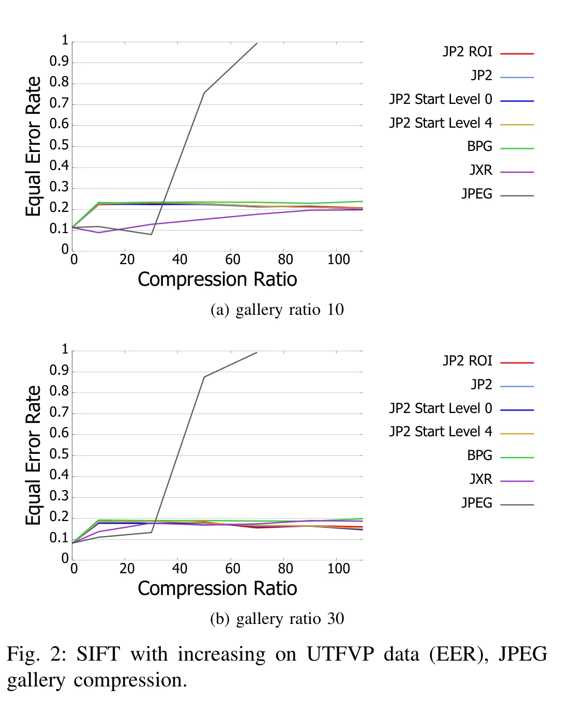

Abstracts are quoted verbatim from the papers. Venues, authors, page numbers and DOIs were verified against the University of Salzburg repository and dblp. The workflow diagrams were drawn for this page, neither paper contains a pipeline figure, so each diagram follows the method its paper describes and is labelled as such below.
Finger Vein Image Compression with Uniform Background
ACM ICBEA 2019 · Stockholm · pp. 23-27 · Sole first author · WaveLab, University of Salzburg
Workflow drawn from the method described in the paper. Not a figure from the paper.
We propose to replace the background data in finger vein imagery by uniform gray data and implications on (i) achieved lossless compression performance and (ii) obtained recognition accuracy in case of lossy compression are determined employing 2 public datasets. Results indicate that replacement of original background by uniform one is definitely profitable for lossless compression, while the lossy case with impact on recognition accuracy has to be handled with caution as introduced sharp edges between finger area and background lead to artifacts which in turn degrade recognition performance. After having smoothed those areas, recognition performance is improved when replacing background for all settings.
What it does. Segment the finger from the background, paint the background a single flat grey, then smooth the boundary that this creates. Evaluate twice: six lossless codecs for file size, and the lossy codec set followed by Maximum Curvature and SIFT recognition for accuracy.
The change, on real samples




Recognition under compression


The gain depends on how much background a dataset has. Both datasets here have similar background fractions, so the ≈2× figure may not transfer to a dataset framed differently.
Funded by the Austrian Science Fund (FWF), grant 27776.
BibTeX
@inproceedings{maser2019icbea,
author = {Maser, B. and H{\"a}mmerle-Uhl, Jutta and Lipowski, Tamara and Uhl, Andreas},
title = {Finger Vein Image Compression with Uniform Background},
booktitle = {Proc. 3rd Int. Conf. on Biometric Engineering and Applications (ICBEA)},
pages = {23--27},
year = {2019},
doi = {10.1145/3345336.3345347}
}
Finger-vein Sample Compression in Presence of Pre-Compressed Gallery Data
BIOSIG 2018 · Darmstadt · pp. 1-5 · Second author · Media Data Formats Lab, University of Salzburg
Workflow drawn from the method described in the paper. Not a figure from the paper.
Compression settings for sample (probe) finger vein data in case of already pre-compressed gallery data are investigated. Inhomogeneous compression scenarios are assessed where probe data can be compressed with different compression technique and compression ratio compared to gallery data using 4 lossy compression schemes, 2 finger vein recognition schemes, and 2 data sets. Results obtained indicate that in case of JPEG2000 pre-compressed gallery, also sample images should be compressed in the same manner, while for JPEG pre-compressed gallery, the optimal sample compression setting depends on the dataset, on the target compression ratio, and on the recognition scheme employed.
What it does. Compress the gallery the way it would have been years ago, compress a fresh probe every other way, match them with two recognition schemes, and see which probe setting survives. The answer is clean for a JPEG 2000 gallery and messy for a JPEG one: there it depends on the dataset, the target ratio, and the recognition scheme.
Results


The grey line climbing off the top of both charts is JPEG. It tracks the others to about ratio 30, then the error rate explodes.
BibTeX
@inproceedings{lipowski2018biosig,
author = {Lipowski, Tamara and Maser, B. and H{\"a}mmerle-Uhl, Jutta and Uhl, Andreas},
title = {Finger-vein Sample Compression in Presence of Pre-Compressed Gallery Data},
booktitle = {Proc. Int. Conf. of the Biometrics Special Interest Group (BIOSIG)},
pages = {1--5},
year = {2018},
doi = {10.23919/BIOSIG.2018.8553484}
}